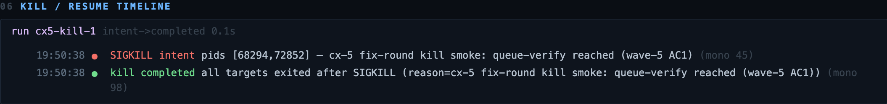
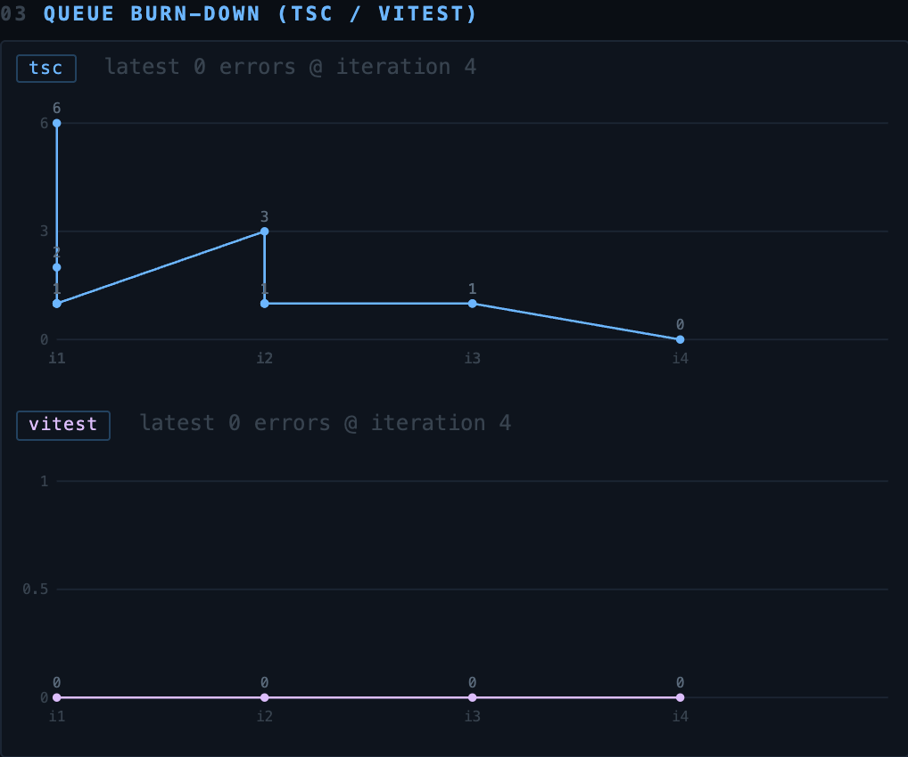
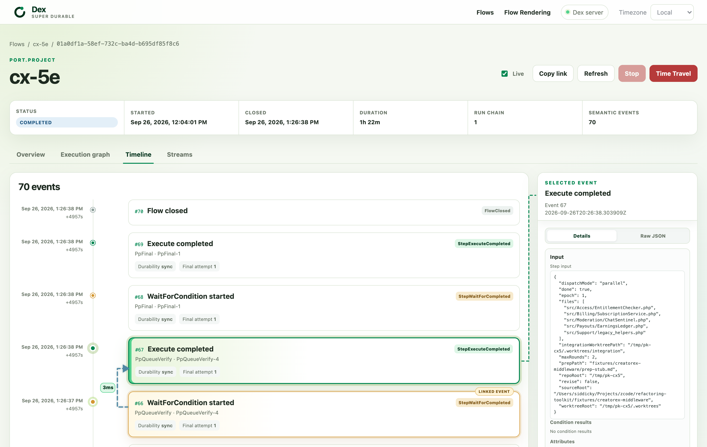
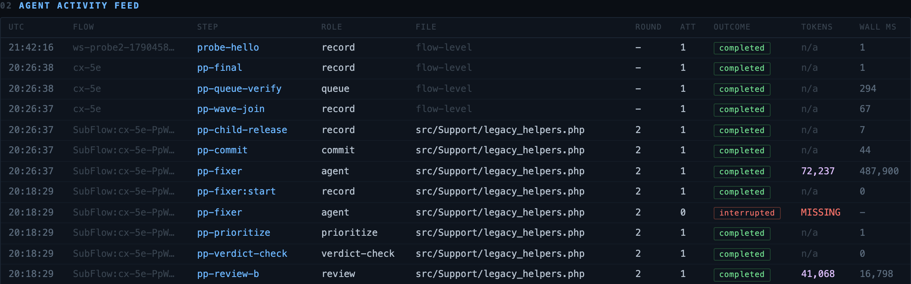

01 · context from our conversation
Start with one bounded extraction.
Your plan retains the database, introduces a modern PHP BFF and Vue 3 frontend, and moves selected functions into Node and Encore TypeScript services over time. I focused on one part of that approach: making the work inside a small extraction easier to direct and inspect.
You also described engineers directing coding agents and bringing working prototypes back to stakeholders. I wanted to make my own engineering choices visible in a working example:
- Small units of work. Track progress by file, with compiler feedback and review findings attached to each round.
- Independent agent review. Separate the implementer from two reviewers and give their findings to a fixer.
- Inspectable recovery. Interrupt a run, restart it, and compare saved history with the resulting commits.
The demonstration uses sample PHP sources. It is a basis for discussing the workflow and its limits before applying it to a real service boundary.
02 · the harness architecture
What I built, and why
I put orchestration in code, gave implementation and review separate agent roles, and recorded each round for inspection. That makes it possible to examine where an agent changed a file, how reviewers responded, and what happened when execution stopped.
Dex Flows, Steps & Waits
Dex Flows coordinate agent dispatches, git operations, and queue checks through typed Step<T> units with SQLite WAL persistence. Wait.allOf joins concurrent work. The recorded recovery run shows completed work being reused and interrupted steps retried.
1 Implementer · 2 Blind Reviewers · 1 Fixer
@opencode-ai/sdk coordinates an implementer, two independent reviewers, and a fixer. Worktree leases separate file edits. Reviewers receive the diff with repository tools disabled; citation judgments assess whether their findings refer to the supplied changes.
Structured review judgments
Uses @typesafe-ai/sdk judgments to assess reviewer findings and citation matches. The run report records agreement outcomes and citation scores for each review round.
Dex Envelope Streams & Anchored Reflogs
JSON event envelopes record role, target file, iteration, attempt number, and token consumption in Dex Attributes. The dashboard and recovery timeline expose that history so I can inspect agent activity and compare it with the saved report.
THE PORT LOOP — ONE FILE, ONE CYCLE
Select an outlined step to inspect its example. Keyboard: Tab, then Enter or Space. On small screens, scroll the diagram sideways.
03 · workflow
Follow a file through review and repair
Choose a scenario and select a step to inspect its code and review findings. This example and the opening worktree simulation use illustrative data to explain the flow. The recorded evidence is listed separately below.
04 · crash recovery
What happened after SIGKILL
In the recorded recovery exercise, I stopped the orchestration engine and background workers with SIGKILL during verification, then restarted using the same database. The saved artifacts record the outcome:
- The Dex worker resumed directly from the last uncommitted
Stepboundary in SQLite WAL and drove to a clean COMPLETED state; - Zero duplicate agent dispatches: Dex step memoization bypassed completed tasks, verified via
dexcli flow history; - 10 operation-ID commits recorded, 0 duplicates: Every git operation uses an idempotent op-ID bound to Dex's step execution context;
- Interrupted fix cycles re-executed with incremented
Context.attemptcounters, transparently auditing skipped vs retried executions.

Click or tap to open full resolution ↗05 · run evidence
Read the recorded results
The artifacts below support these results from the saved run. Reviewer agreement and citation scores describe the review process; they do not measure type inference accuracy.
| Result | Recorded evidence | Source |
|---|---|---|
| Crash recovery | AC1 assertions pass: post-kill activity, no duplicate op-ID commits, integrated output present | AC1 battery log |
| Provenance and token accounting | 213 anchored envelopes, 2,292,331 model tokens | cx-5e report |
| Review coverage | 22 completed verdict records across five PHP files and one specification; findings, agreement, and citation scores recorded per round | Findings and agreement |
| Verification queues | TypeScript errors: 6 → 3 → 1 → 0. Vitest was not installed in the integrated checkout; its zero queue totals do not show executed tests. | Queue burn-down |

Click or tap to open full resolution ↗06 · recorded dashboard
Inspect the run, one panel at a time
The Dex timeline shows the recorded workflow execution. The mission-control panel below adds agent attempts and token records. Open either image at full resolution to inspect the details.
cx-5e completed. They show the saved run, not a live connection. Relative timestamps belong to the capture.
Click or tap to open full resolution ↗cx-5e. Selected event 67 completes PpQueueVerify-4; event 66 is its linked wait event. The details panel exposes the step input. Completed workflow status does not establish test coverage; Vitest was unavailable in this run.
Click or tap to open full resolution ↗MISSING for token usage. The raw status remains visible; this excerpt is not the full event history.07 · potential fit
Where this could fit
I see this workflow as a way to explore one selected service extraction alongside the retained PHP application. Choosing the service boundary and defining acceptable behavior would come first. The prototype supplies a repeatable workflow for the code changes:
- File-level work. Dex coordinates implementation, diff capture, two reviews, citation assessment, prioritization, fixes, commits, and integration. This makes each file’s progress inspectable; a deployable service still needs a defined contract and integration checks.
- Separate review roles. Reviewers inspect the supplied diff with repository tools disabled. TypeSafe judgments assess agreement and citation matches before findings reach the fixer. These are model judgments, so human review and behavioral tests still matter.
- Recovery records. Operation IDs identify git commits, and Dex records step execution. Parallel batches join through
Wait.allOf. The SIGKILL exercise above shows what recovered in that run.
08 · discussion
Let’s talk through the prototype.
I’d welcome the chance to walk you through the prototype and discuss where this approach might fit. I can show the implementation choices, the reviewer findings, and what the recovery exercise established.
The source, PR, and saved run artifacts are here for inspection. I hope they give you a concrete sense of how I would approach this work with your team.
> github.com/siddicky/refactoring-toolkit PR #1 — the build, reviewed